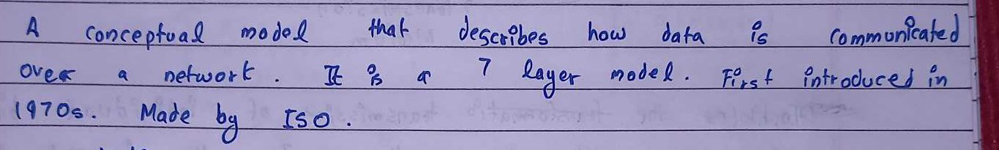

A handwriting font · v1.0
Made from 120 pages of my Computer Networks notes. Every letter comes from my own pen strokes: found in the photos, cleaned up, and redrawn with one steady ballpoint nib.
Type tester
Click the sheet and type. Letters change between variants as you go, like real handwriting.
Your text stays in this browser only.
From the notebook
Top: a photo of page 5 of the notes. Below: the same words typed in the font.

Quirks worth keeping
These habits turned up again and again across the pages, so the font keeps them.
i and j get a small open circle, never a dot.
The l is always a loop, never a straight stick.
The d's stem curls back at the top, almost like ∂.
A small curl at the foot. For a plainer r, turn on ss01.
The crossbar only goes to the right of the stem.
A loop on top with the legs crossing below.
The bottom of the 2 starts with a small curl.
The hook-headed arrow from my margins. Type → (U+2192).
Contextual alternates · calt
Each letter was picked three times from different pages. The font rotates through them, so double letters like “ll” and “ee” never look stamped.
Character set
How it was made
Use it
Put the font files next to harshpreet-hand.css, import that CSS, then set data-theme="handwritten" on the page.
@font-face {
font-family: "Harshpreet Hand";
src: url("/fonts/HarshpreetHand-Regular.woff2") format("woff2");
font-weight: 400;
font-display: swap;
}
@font-face {
font-family: "Harshpreet Hand";
src: url("/fonts/HarshpreetHand-Bold.woff2") format("woff2");
font-weight: 700;
font-display: swap;
}
[data-theme="handwritten"] {
font-family: "Harshpreet Hand", "Segoe Print", cursive;
font-size: 1.15em; /* x-height is 0.44em, so size up a little */
line-height: 1.6; /* room for the long g / y loops */
color: #1f2f8c; /* ballpoint blue */
background: #f7f8fc;
font-feature-settings: "calt" 1, "kern" 1;
}
dist/ · HarshpreetHand-Regular.woff2 · HarshpreetHand-Bold.woff2 · .woff · .ttf · harshpreet-hand.css